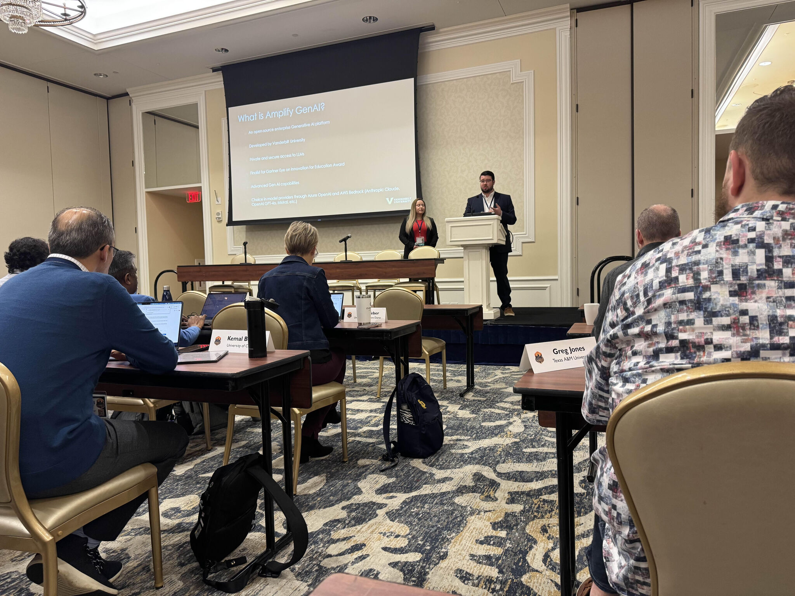

Career
Vanderbilt University - Amplify Generative AI Innovation Center
AI Engineer | May 2023 – Present
I joined Vanderbilt's Amplify Generative AI Innovation Center after graduation and have been here since, working alongside Jules White - a globally recognized AI expert - on the future of AI in higher education. When I joined we were a team of three; we are now a team of seven full-time staff with additional undergraduate and graduate student developers that I manage.
Amplify - Open-Source Enterprise AI Platform
I am a lead developer of Amplify, an open-source enterprise generative AI platform purpose-built for higher education. What began as a question - can we give universities the ChatGPT experience without forcing them into per-user subscription pricing? - is now a nationwide reality. Amplify serves 18,000+ users at Vanderbilt at an average cost of $3/user/month, and has been adopted by a growing community of universities across the United States.
The platform provides full LLM access: AI assistants, agentic workflows, Office 365 integrations, file handling, API access to models, and the infrastructure needed for secure academic environments. I architected and implemented core platform features including memory systems, a novel RAG Fusion system, API integrations, artifact generation, and comprehensive admin monitoring tools.
Majk - Agentic Desktop Application
As appetite for AI at Vanderbilt grew beyond chat, we developed Majk - an agentic desktop application that coordinates specialized AI agents to complete real tasks for university staff and researchers. Majk goes far beyond a chat interface: it runs work in parallel across multiple AI agents and returns finished outputs. Think of it as the capability of a tool like Claude Code, but with an interface designed for non-developers - enabling staff to accomplish complex tasks and build AI applications and workflows through prompting alone.
AI Training, Education & Community
I lead Amplify training sessions for the Vanderbilt community - live walkthroughs of the platform, feature demonstrations, real-world use case examples, and Q&A - reaching thousands of students, staff, faculty, and administrators. I also provide ongoing AI documentation, support, and one-on-one coaching, including personal AI coaching for Vanderbilt Chancellor Daniel Diermeier.
I led and ran the Amplify Staff Fellows program: a cohort-based initiative that embeds AI deeply into university departments by turning selected staff members into AI power users, advocates, and teachers - and by building them each a custom AI application during the program. We have completed two cohorts (Fall 2025 and Spring 2026), with roughly 20 fellows per cohort drawn from departments across the university.
Research & Grant Leadership
I lead and contribute to grant applications and research collaborations with internal and external partners, exploring applications of LLMs across domains and addressing key shortcomings of generative AI. I have authored and co-authored four peer-reviewed papers on prompt engineering, LLM code generation, and AI capabilities. My primary research paper has 15 citations. An upcoming paper surveys AI guardrail and protection systems and proposes new methods for testing AI system resilience against adversarial prompting.
I also authored the CCIM report on the state of generative AI in real estate education, prepared for the CCIM Institute.
Presentations

I was also featured on NPR's "Up First" in a piece titled "Higher Education's AI Problem", speaking with journalist Lee V. Gaines about AI's opportunities and challenges in higher education.
Aimbridge Hospitality - IT Intern
May 2021 – August 2022 | Summers 2021 & 2022
Aimbridge Hospitality is a leading third-party hotel management company. During two summers as an IT Intern, I led enterprise infrastructure and automation projects that delivered lasting operational and financial impact.
- Communication Automation: Built a Dynamic Distribution Group system using PowerShell and SQL jobs, transforming a manual process managing 450,000 employee records into a fully automated system - ensuring reliable internal communications for tens of thousands of employees including senior executives.
- License Optimization: Identified and eliminated unnecessary Microsoft licenses, resulting in $150,000 in savings.
- Active Directory Redesign: Redesigned the Active Directory structure for 20,000 users across 1,500 hotel properties and consolidated ten AD domains into two - restructuring over $2,000,000 in annual Microsoft license billing.
- Department Automation: Built custom automation solutions for legal, finance, and accounting teams, significantly reducing manual workload.
"From day one, Max was part of the IT Team and was assigned important, mission critical projects to complete. These projects not only helped him learn and hone his technology skills, they also provided important value to Aimbridge, and resulted in $150,000 in savings."
- Roy Mellinger, Global CISO & VP Security, Privacy, IT Risk and Compliance, Aimbridge Hospitality